1 · Reference image
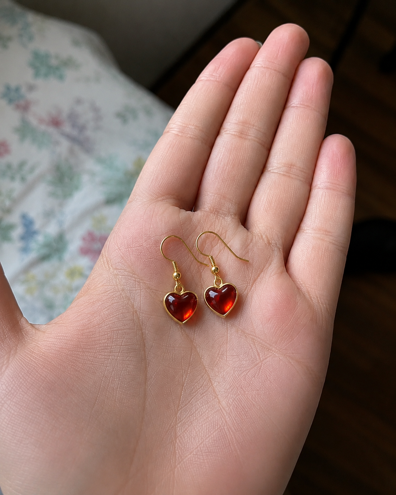
A real phone photo of the earrings, dropped straight into the chat.
→
 /
Blogs & Newsletters
/
Blogs & Newsletters
No camera, no editing suite, no week of back-and-forth. One photo and a chat, and you walk out with a polished, broadcast-style commercial. Here's the CloudStep spot we made - and everything below is exactly how you'd make your own.
Drop in a photo of your own product and walk away with a finished commercial - the whole chain runs in one conversation.
Try it with your own product photo →Product commercials used to need a studio, a shoot, an editor and a week of back-and-forth. Sogni Chat collapses the whole pipeline into a single conversation.
For small brands, the bottleneck is not imagination - it's production. A product photo is easy. A polished video ad usually means scripting, storyboarding, editing, voice-over, music, and revisions. Sogni Chat puts that whole chain into one conversation.
You drop in a reference image - a sneaker, a drink, a pair of earrings - or just describe the product. GPT Image 2 renders a clean cinematic storyboard sheet with timecodes, camera notes and voice-over baked into every panel. Then you hand that sheet back to the agent and Seedance 2.0 (or LTX 2.3) turns it into a finished social commercial, native audio included - all inside chat.sogni.ai.
The walkthrough below follows one real session: CloudStep, a premium sneaker, going from a single product photo to a 15-second "walk on clouds" spot.
The same three-step flow works for any category. Start from a real product photo (or invent the product entirely), let GPT Image 2 build the storyboard, then render it with Seedance 2.0 or LTX 2.3. Here are four spots made exactly that way before we slow down and build CloudStep step by step.

A real phone photo of the earrings, dropped straight into the chat.
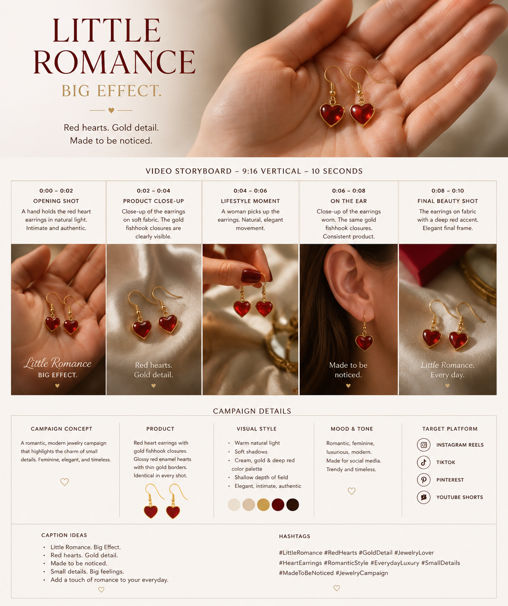
GPT Image 2 turns it into a 5-panel sheet with captions and campaign notes.
Seedance 2.0 animates the sheet into a finished vertical spot.
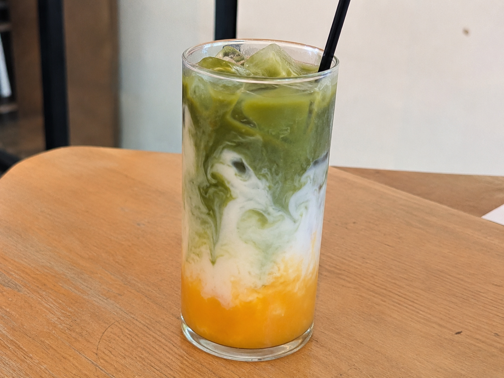
One snapshot of the drink sets the colour story and product.
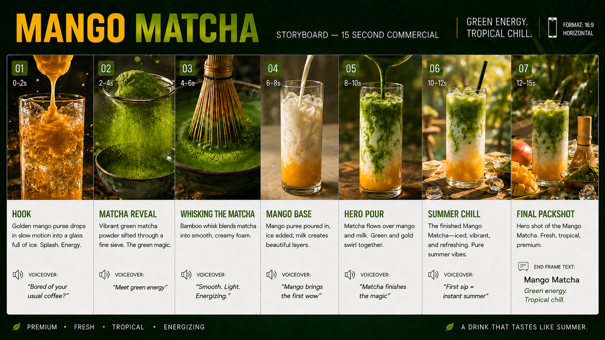
A 7-beat commercial sheet: hook, matcha reveal, pour, hero, packshot.
The sheet renders into a glossy 15-second beverage ad.
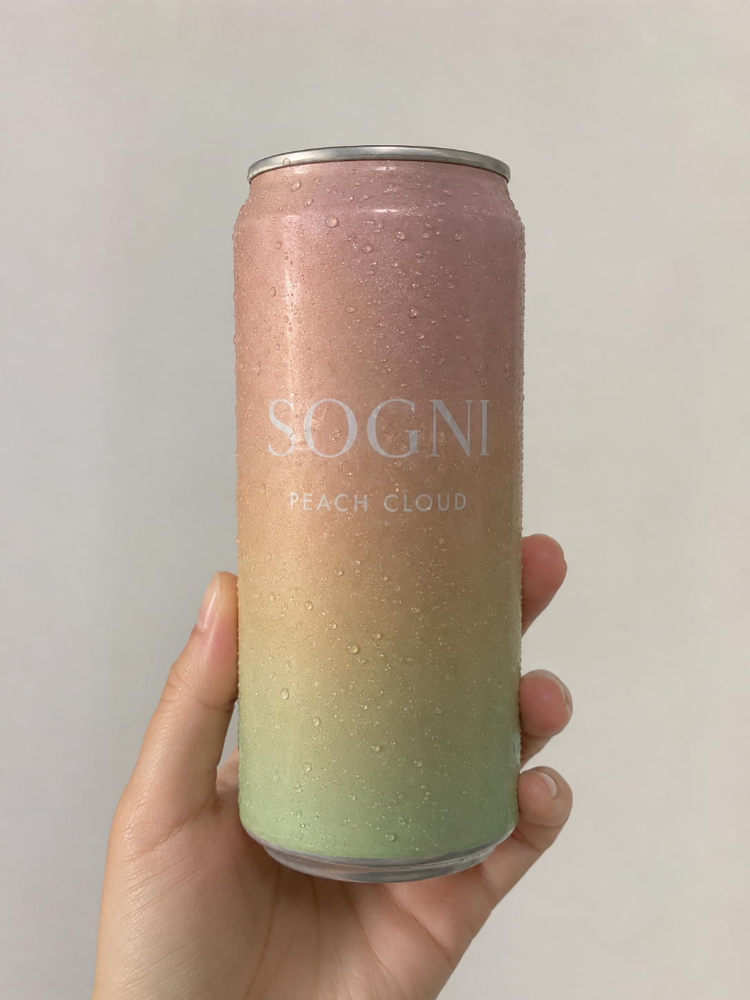
The can in hand - that's the only input the agent needs.
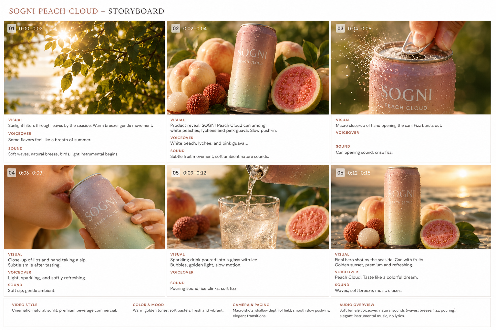
Six golden-hour beats, branding and pacing already locked in.
A soft, sun-flared summer spot straight off the sheet.
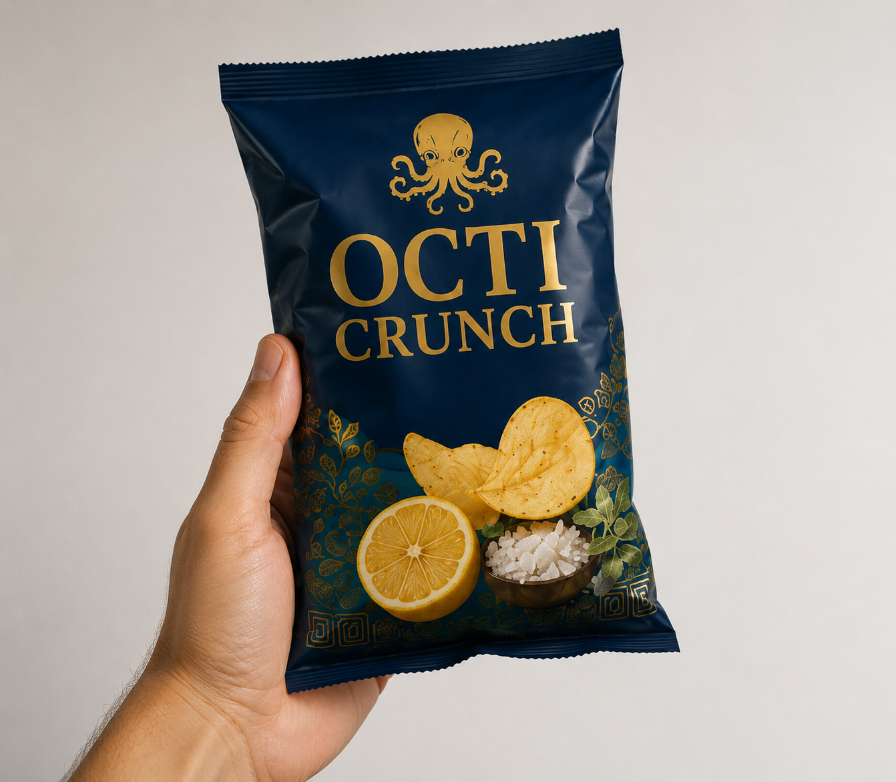
A single product shot of the chips bag sets the brand and packaging.
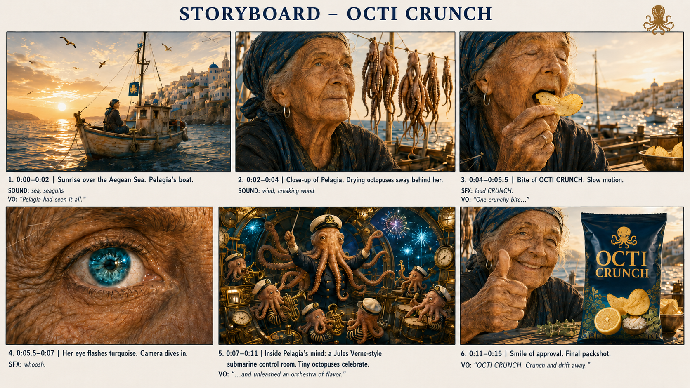
GPT Image 2 builds a six-beat cinematic sheet around the pack.
The sheet becomes a cinematic 15-second commercial.
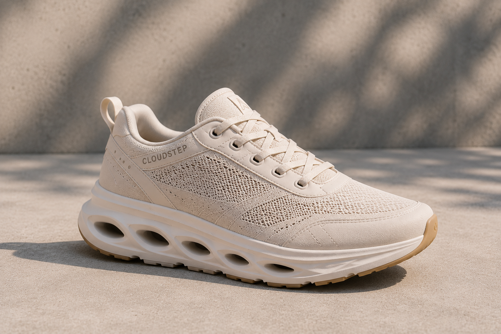
Start with what you already have: even a quick, unedited phone shot. Here it's a single snapshot of the CloudStep sneaker - soft knit upper, sculpted sole, the logo near the heel.
Drag it into the composer (or hit the + in the chat box). From this moment, Sogni Chat uses the image as the product anchor, helping the storyboard and final render keep the shoe's shape, material, logo placement, and color consistent.
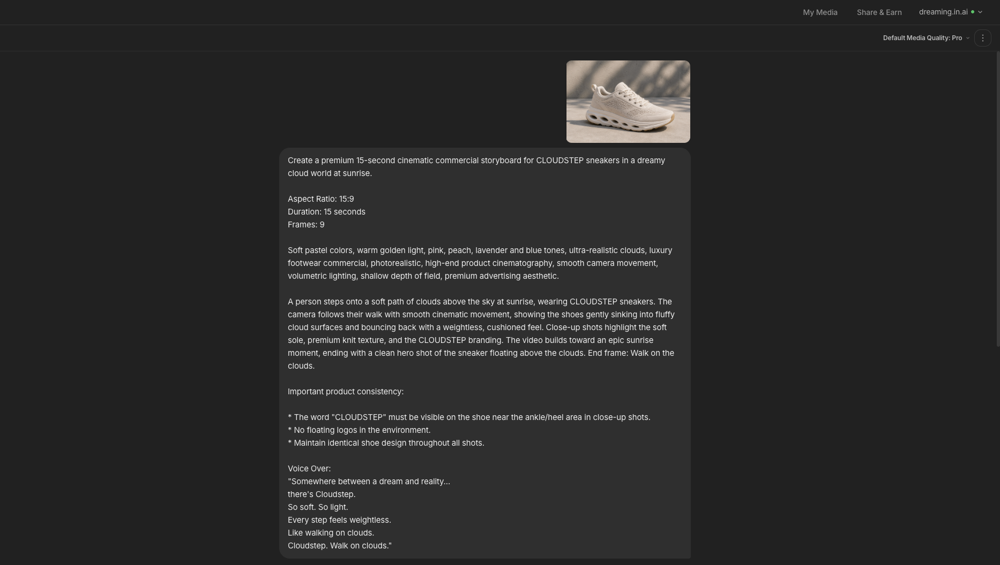
The chat reads natural language, so you don't engineer a prompt - you describe the spot. Set the world, the aspect ratio, the duration, the number of frames, the mood and the voice-over. Then add a short product-consistency note so the branding never drifts between panels.
Be explicit about the aspect ratio you want - 16:9 for YouTube and landscape, 9:16 for Reels, Stories and TikTok, or 1:1 for the feed - and the storyboard and the final video both come out in exactly that frame.
That single message is enough. The agent picks the right image model for your quality tier, plans the beats, and hands you a cost estimate before a single credit is spent.
Create a premium 15-second cinematic commercial storyboard for CLOUDSTEP sneakers in a dreamy cloud world at sunrise. Aspect Ratio: 16:9 Duration: 15 seconds Frames: 9 Soft pastel colors, warm golden light, pink, peach, lavender and blue tones, ultra-realistic clouds, luxury footwear commercial, photorealistic, high-end product cinematography, soft cinematic lighting, shallow depth of field, premium advertising aesthetic. A person steps onto a soft path of clouds above the sky at sunrise, wearing CLOUDSTEP sneakers. The camera follows their walk with smooth cinematic movement, showing the shoes gently sinking into the fluffy cloud surfaces and bouncing back with a weightless, cushioned feel. Close-up shots highlight the soft sole, premium knit texture, and the CLOUDSTEP branding. The video builds toward an epic sunrise moment, ending with a clean hero shot of the sneaker floating above the clouds. End frame: Walk on the clouds. Important product consistency: - The word "CLOUDSTEP" must be visible on the shoe near the ankle/heel area in close-up shots. - No floating logos in the environment. - Maintain identical shoe design throughout all shots. Voice Over: "Somewhere between a dream and reality... there's Cloudstep. So soft. So light. Every step feels weightless. Like walking on clouds. Cloudstep. Walk on clouds."

Before anything renders, Sogni Chat opens a Confirm generation panel: the model (GPT Image 2), the output size, the quality tier and the exact cost in Spark credits. For this storyboard sheet it's about 78 Spark.
Trust the agent for a longer run? Flip "Don't ask me again this session" and the chain runs uninterrupted. Otherwise every step stays metered, transparent and yours to approve.
First, it plans. You watch it inspect the reference, draft a creative brief and capture the storyboard "contract" - the structure it will draw to.

Then it lays out a proper beat sheet: every panel gets a timecode, a visual, a camera move, a line of voice-over or audio, and a transition. You can read the whole 9-beat plan and approve it - or tell it what to revise - before any image is drawn.
It reads like the shot list a real agency would hand a film crew - except it's built in minutes. This is the moment where the rhythm of your fifteen seconds is actually decided: where the hook lands, how long the hero shot holds, when the logo arrives and what the voice-over says over each frame. Get it right here and the rest of the workflow just follows the plan.
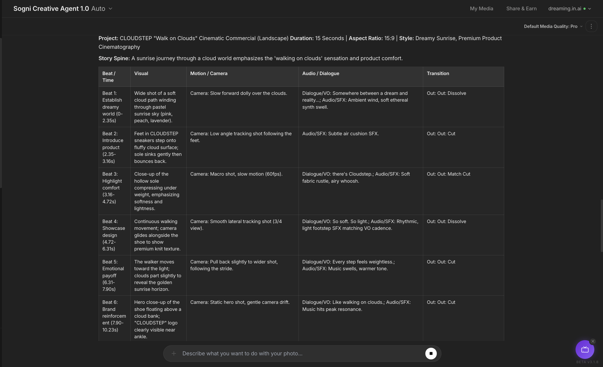
Every row is a real production decision you can edit in plain language. Change a camera move from a slow push to a handheld follow, swap a line of voice-over, retime a beat so the hero shot lands later, or cut a panel entirely. The agent rewrites the contract and keeps everything else intact - you're never re-prompting the whole thing from scratch.
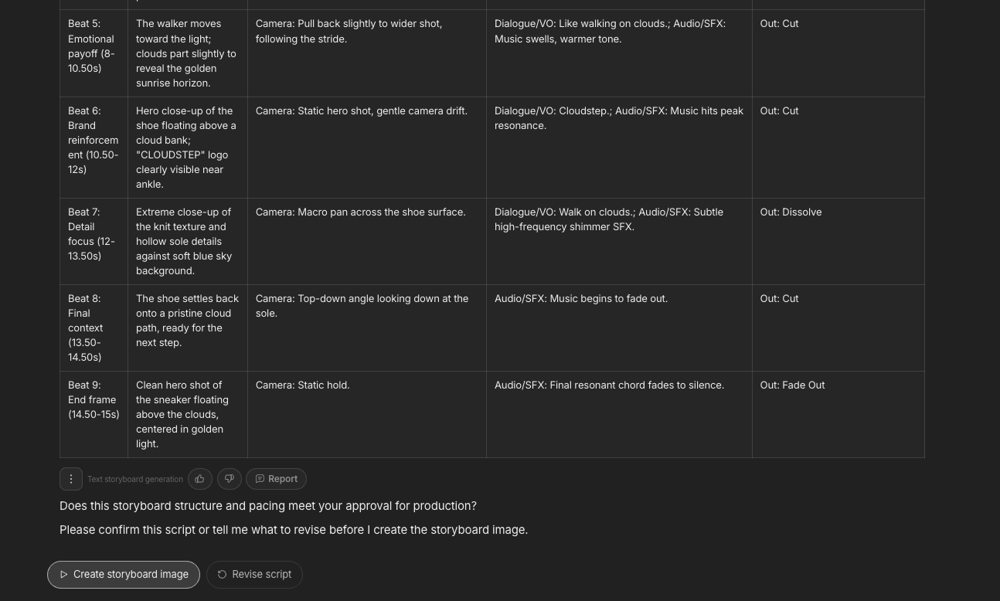
The agent renders every approved beat together as a single sheet - nine panels in sequence, each with its timecode and on-screen voice-over caption. Because they're drawn in one shot, the shoe stays identical across every frame: same knit, same sole, same logo placement, same light.
That consistency is the whole point. It's what makes the next step - turning the sheet into motion - actually hold together.
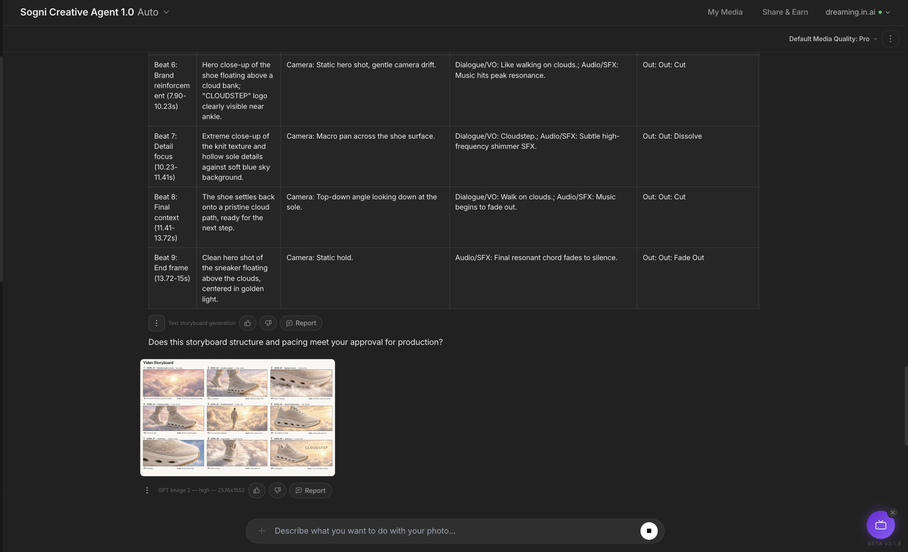
The sheet format is deliberate, too. It's something you can actually use: drop it into a deck, send it to a client for sign-off, or print it and mark it up. Each panel reads like a frame from the finished spot, so the whole team can see the ad - pacing, framing, copy and all - before a single second of video is rendered.
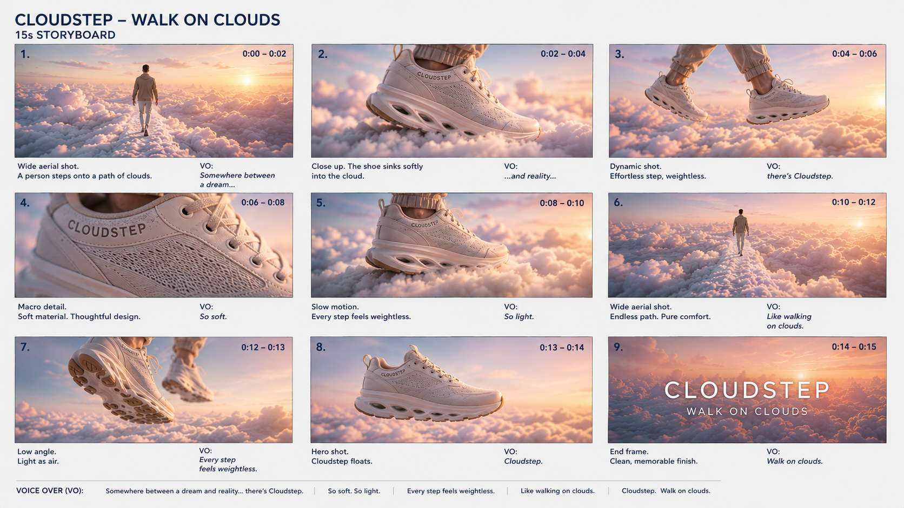
Reply "Looks good, generate the video," or tap the button under the sheet. The agent feeds the storyboard into Seedance 2.0, treats every panel as a keyframe, and stitches motion, transitions and pacing between them - same shoe, same light, now moving. Native audio is included.
Looks good, generate the video.
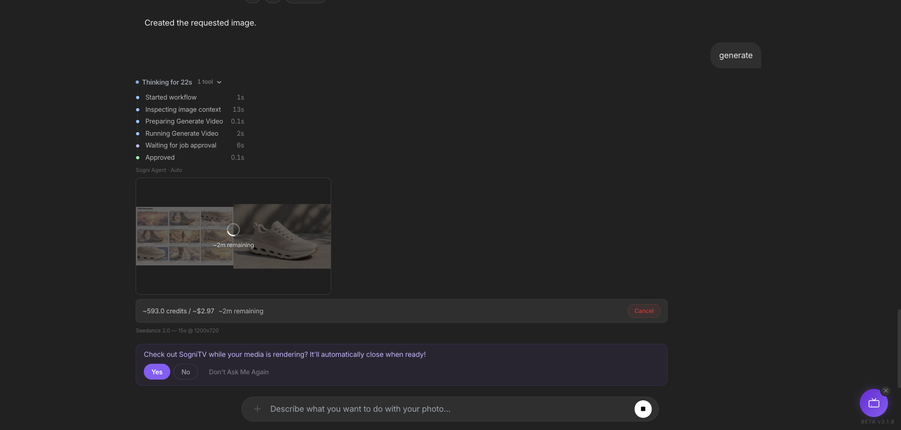
Seconds later the finished clip lands right back in the chat, and you can keep shaping it without ever leaving. Regenerate a single beat, nudge the motion, or extend a shot - only the part you touch changes, and the product stays locked across every frame.
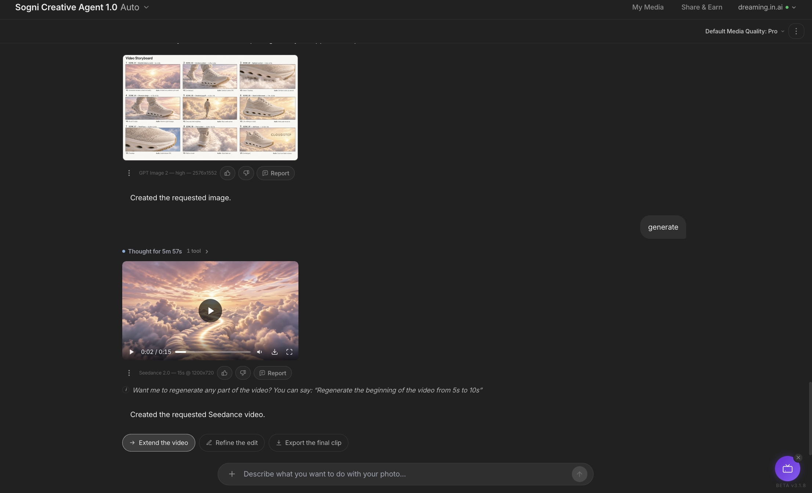
What you get back is a real commercial, not a rough draft. Smooth camera motion, clean cuts between beats, the voice-over read and music sitting underneath - all in one file. Download it as an MP4 in the format you briefed and drop it straight onto your store page, your socials or an ad campaign.
Because the product identity is already captured, exploring variations is cheap. Ask for a warmer, golden-hour version and the agent rebuilds the sheet - same CloudStep sneaker, new light, new pacing - then renders it again.
Here's a second pass: a sunlit "Video Storyboard" cut and the clip that came out of it. Two distinct commercials from one product photo.

This is where the workflow pays off. The first ad did the hard work - locking the product, the voice and the structure - so every variation after it is just one more prompt: a festive cut, a moodier night version, a square crop for the feed and a vertical one for Stories. Save the whole chain as a Workflow Template and the next product drops straight into the same pipeline.
That's the whole point of Sogni Chat. The same conversation that reads your product photo drafts the storyboard, and the same conversation that drafts the storyboard renders the video. Every step is metered, every step is reversible, and the asset manifest keeps your product locked across all of it.
Start with a photo, end with a finished ad. Then save it as a Workflow Template and the next product launch, promo or social spot is one prompt away - not a pile of separate panel calls.